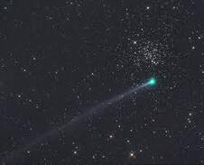

El cometa más famoso, visible desde la Tierra cada 75-76 años. Fue el primer cometa identificado como periódico.
Curiosidad: Apareció en el tapiz de Bayeux, relacionado con la conquista normanda de Inglaterra en 1066.
Fue visible a simple vista durante 18 meses, un récord moderno. Su paso fue en 1997.
Característica: Tiene un núcleo de 60 km, mucho mayor que el promedio de los cometas.
Descubierto en 1996, pasó extremadamente cerca de la Tierra (15 millones de km).
Curiosidad: Su cola medía más de 500 millones de km, una de las más largas jamás registradas.
Famoso por impactar con Júpiter en 1994, proporcionando datos clave sobre impactos cósmicos.
Característica: Se fragmentó en más de 20 partes antes del impacto.
Sorprendió al sobrevivir a un paso cercano al Sol en 2011, cuando se pensaba que se desintegraría.
Curiosidad: Fue visible desde el hemisferio sur justo después de su paso por el Sol.
El cometa más brillante en 40 años, visible en 2007 desde el hemisferio sur.
Curiosidad: Su cola formó un espectacular abanico visible a plena luz del día.
Tiene el periodo orbital más corto conocido: 3.3 años. Fue el segundo cometa identificado como periódico.
Característica: Produce la lluvia de meteoros Táuridas.
Fue descubierto en 2012 y se pensaba que sería el "cometa del siglo", pero se desintegró en su paso cerca del Sol en 2013.
Curiosidad: Era un cometa nuevo, proveniente de la nube de Oort.
Fue impactado por una sonda de la NASA (Deep Impact) en 2005 para estudiar su núcleo.
Característica: Su superficie mostró signos de antiguos impactos y materiales primitivos.
Fue visible en 2020 a simple vista durante semanas, sorprendiendo por su brillantez.
Curiosidad: Fue descubierto por el telescopio espacial NEOWISE tan solo unos meses antes de su aparición.